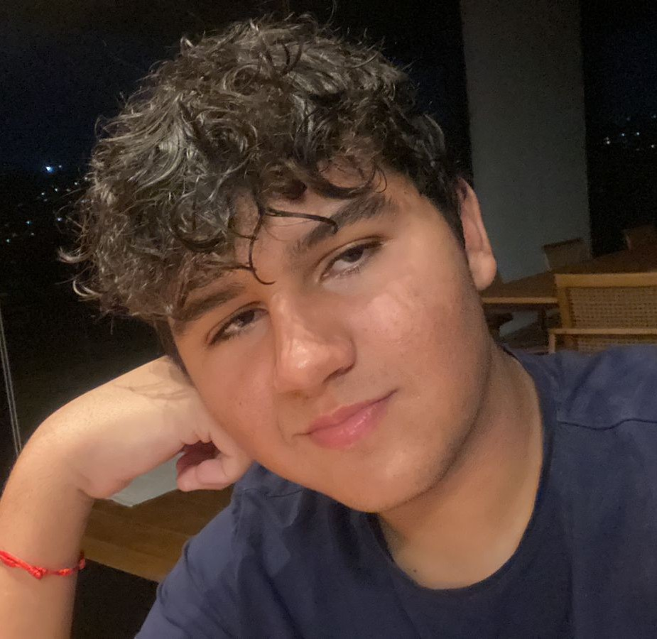

📞(31) 97515-0853 | 📩 lucaburattouni@gmail.com | 📷 @luca_btto
🌐 Aluno de Engenharia de Software na PUC Minas | 📖 Formado com mérito no Liceo Scientifico da Fundação Torino

Estudante de Engenharia de Software no primeiro periodo na PUC Minas, com certificados da área de astronomia e lógica, além dee um certificado geral de honra por performance excepcional no "Esame di Stato conclusivo del corso di studio di istruzione secondaria superiore" do governo Italiano, além de 7 anos de experiencia em teatro e conclusão de matérias eletivas de biotecnologia e geopolitica. Fluente em português, inglês e italiano, além de proficiente em espanhol.
Olá! Eu sou o Luca Buratto, estudante de Engenharia de Software, mas interessado por diversos assuntos. Meu conhecimento abrange uma área que vai das ciencias exatas às ciencais humanas, com um grande interesse por assuntos como literatura, história, tecnologia e química. Além de ser fluente em 3 linguas e proficiente em uma quarta, também estudei latim e estou sempre em busca de aprender mais.